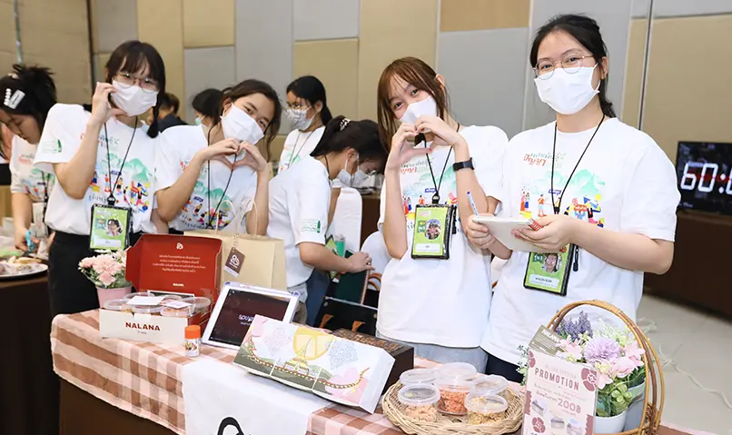
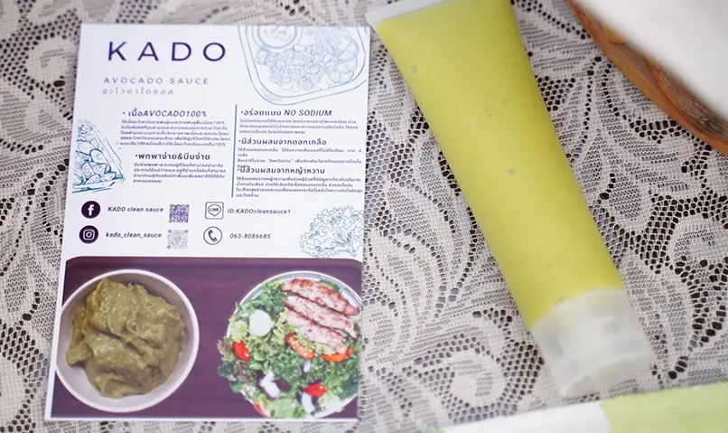
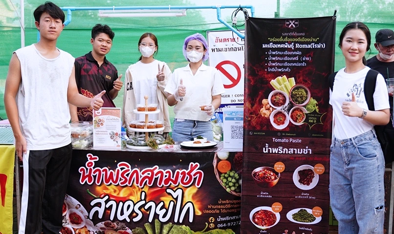
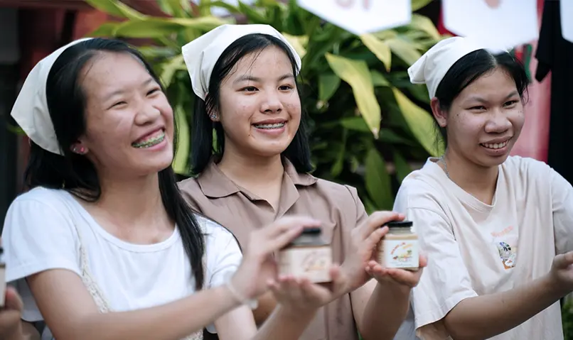
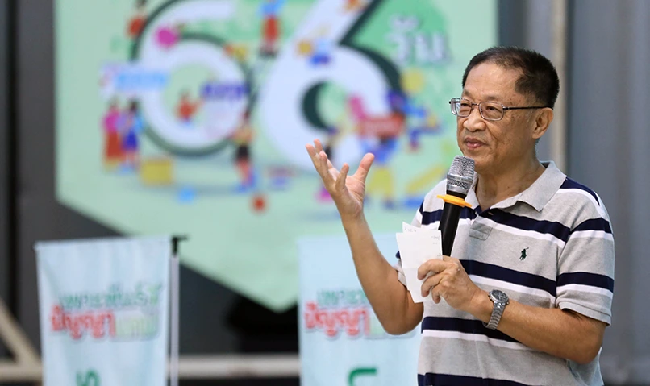
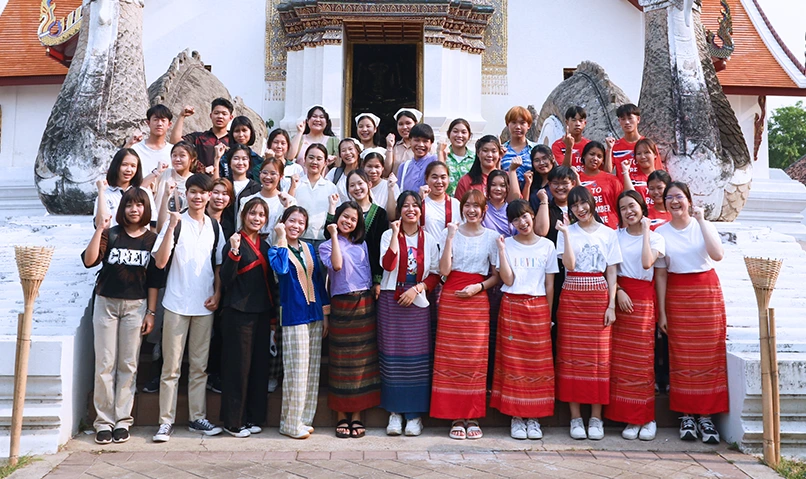

“การเรียนรู้ที่ได้ผลที่สุด คือการลงมือทำ” หนึ่งในหัวใจสำคัญของกิจกรรมบ่มเพาะเยาวชนระดับมัธยมปลาย ในโครงการเพาะพันธุ์ปัญญาแคมป์ รุ่นที่ 1 “66 วันเรียนรู้ชีวิตทำธุรกิจให้เป็นจริง” โครงการที่จะเติมองค์ความรู้และทักษะใหม่นอกเหนือจากการเรียนในห้องเรียนปกติ โดยเฉพาะทักษะการเป็นผู้ประกอบการ โดยมูลนิธิเพาะพันธุ์ปัญญา ได้มอบเงินทุนให้แก่เยาวชนที่เข้าร่วมจำนวน 8 กลุ่ม จาก 8 โรงเรียนครอบคลุมทั่วจังหวัดน่าน เพื่อใช้ในการลงทุนและบริหารจัดการธุรกิจจริง
เพาะพันธุ์ปัญญาแคมป์ รุ่นที่ 1 เป็นกิจกรรมที่จัดต่อเนื่องกัน กินเวลาถึง 2 เดือนเศษ มีกำหนดการเข้าแคมป์ 3 ครั้งด้วยกัน คือ กล้าเรียน เริ่มต้นปูพื้นฐานการสร้างไอเดียธุรกิจ วิเคราะห์ความเป็นไปได้ และเรียนรู้สิ่งที่จำเป็นในการทำธุรกิจจริงภายในระยะเวลา 5 วัน จากนั้นแต่ละทีมจะมีเวลากลับไปพัฒนาสินค้าและบริการอีก 23 วัน เพื่อนำเข้าสู่ตลาด ส่วนแคมป์ที่สอง กล้าลุย จะเป็นช่วงเวลาที่ทุกคนจะได้ลุยตลาดจริง เพื่อเรียนรู้จุดเด่นจุดด้อยและนำกลับไปพัฒนาต่อยอดสินค้า และจะมีช่วงการดำเนินธุรกิจจริงอีกราว 1 เดือน ก่อนที่จะเข้าแคมป์สุดท้ายคือ กล้าก้าว เพื่อสรุปรายงานและนำเสนอผลประกอบการ


นั่นทำให้เพาเปิด 8 ไอเดียสร้างสรรค์ธุรกิจ
เวลานี้ผ่านมาแล้วครึ่งทางของโครงการฯ ซึ่งหลังจากจบแคมป์แรก กล้าเรียน แต่ละทีมกลับไปสานต่อภารกิจการพัฒนาสินค้า เพื่อนำกลับมาทดสอบตลาดในแคมป์ที่สองคือ กล้าลุย ด้วยการเปิดบูธแนะนำสินค้าและจำหน่ายจริงที่ถนนคนเดินกาดข่วงเมืองน่าน
ทำให้พวกเขาได้สัมผัสถึงการเป็นผู้ประกอบการจริงกันมากขึ้น โดยทั้ง 8 ธุรกิจ ล้วนเป็นไอเดียสร้างสรรค์ใหม่ ๆ ที่ช่วยยกระดับของดีของเด่นในจังหวัดน่านได้อย่างน่าสนใจ
ไม่ว่าจะเป็น ข้าวแคบน่าน แบรนด์ ลินา จากทีมโรงเรียน เมืองลีประชาสามัคคี เนยถั่วสัญชาติไทย
แบรนด์ มะมื่น บัตเตอร์ จากทีมโรงเรียนปัว กาแฟจากดอยสูงบ้านมณีพฤกษ์ และพิซซ่าม้ง แบรนด์ มงเดอพี จากทีมโรงเรียนพระธาตุพิทยาคม สแน็ค บ็อกซ์ แบรนด์ NALANA จากทีมโรงเรียนศรีสวัสดิ์วิทยาคาร น้ำพริกสามช่า ชูจุดเด่นสาหร่ายไกยีเป็น เครื่องเคียง จากทีมโรงเรียนเชียงกลาง
(ประชาพัฒนา) อะโวคาโด้ซอส แบรนด์ Kado จากทีมโรงเรียนท่าวังผาพิทยาคม คุกกี้ 10 ชาติพันธุ์ (10 ชนเผ่า) แบรนด์ Ten Bites จาก ทีมโรงเรียนราชประชานุเคราะห์ 56 และ ข้าวหลามแนวใหม่ แบรนด์ หลามรวย จากทีมโรงเรียน
ถอดบทเรียนจากการทำธุรกิจจริง
แต่กว่าจะมาถึงวันนี้ได้
ต้องบอกว่าไม่ง่ายเลยสำหรับน้อง ๆ เยาวชน หลายคนต้องผ่านเรื่องราวที่มีทั้ง น้ำตา รอยยิ้ม และเสียงหัวเราะ แต่แม้ต้องเจอกับอุปสรรคมากมายและแตกต่างกัน พวกเขาก็ผ่านมาได้เพราะความเป็นนักสู้และไม่ยอมแพ้นั่นเอง
อย่างเช่น ทีมจากโรงเรียนเชียงกลาง
ที่พบปัญหาตั้งแต่การพัฒนาผลิตภัณฑ์ เดิมตั้งใจจะพัฒนาที่ข่วนเล็บแมวจากชานอ้อย แต่พวกเขามีเวลาไม่เพียงพอในการวิจัยผลิตภัณฑ์กับแมวจริง จึงต้องเปลี่ยนตัวสินค้าใหม่เป็นน้ำพริกพร้อมเครื่องเคียงคือสาหร่ายไกยี โดยมีเวลาพัฒนาสูตรน้ำพริกเพียง 4 วัน และยังต้องเจออุปสรรคก่อนวันลุยตลาดจริง
1 วัน เพราะน้ำพริกที่สั่งผลิตมานั้นได้รสชาติไม่ตรงกับความต้องการ จึงต้องเร่งผลิตเองใหม่ทั้งหมด


โดยน้อง ออโต้ หรือ พัฒชรพล สุขอยู่ CEO จากธุรกิจน้ำพริกสามช่า เล่าให้ฟังว่า พวกเขาเสียเวลาไปกับการพัฒนาที่ข่วนเล็บแมวค่อนข้างมาก แต่สุดท้ายก็เปลี่ยนความคิดมาขายน้ำพริกแทน และยังต้องมาเจอปัญหาการสั่งผลิตสินค้าแล้วไม่ได้ตามที่ต้องการอีก ทำให้ตอนนั้นรู้สึกท้อมากจนอยากจะร้องไห้
แต่ก็มาคิดได้ว่า นี่ยังเป็นแค่การเริ่มต้นเท่านั้น เมื่อสู้กันมาถึงขนาดนี้ก็ต้องฮึดสู้กันต่อไป ตอนนั้นจึงแก้ปัญหาด้วยการทำน้ำพริกกันเอง โดยทำใหม่ทั้งหมดเพื่อให้พร้อมกับการลุยตลาดครั้งแรก ผลที่ออกมาน่าพอใจมาก แต่สิ่งที่ยังต้องพัฒนาต่อไปคือ แพ็คเกจจิ้ง
ต้องน่าสนใจ และบอกเล่าเรื่องราวเกี่ยวกับตัวสินค้าให้มากขึ้น
“ถือว่าเราได้บทเรียนกันเยอะมาก หลัก ๆ คือพวกเราไม่ควรยอมแพ้อะไรง่าย ๆ เพราะถ้าเรายอมแพ้แล้วก็จะไปต่อไม่ได้ และเมื่อผ่านมาได้แล้วก็เพราะว่าเราไม่ยอมแพ้นั่นเอง อีกเรื่องคือการทำงานเป็นทีม
คิดว่าสำคัญเพราะหากเราทำงานคนเดียวก็เหนื่อยอยู่คนเดียว และงานจะไปต่อไม่ได้ แต่ถ้าทุกคนช่วยกันทำ รู้หน้าที่ของแต่ละคน ทุกอย่างมันก็จะผ่านไปได้ง่ายขึ้น และส่วนตัวผมเอง รู้สึกว่าเป็นคนใจเย็นขึ้น รู้จักรับฟังคนอื่นมากขึ้น เพราะความคิดเราอาจไม่ได้ถูกเสมอไป
และความคิดของเพื่อนอาจจะหาคำตอบได้ดีกว่า ดังนั้นเราต้องปรับตัวเข้าหากันพูดคุยกันให้มากขึ้น”
ด้านทีมโรงเรียน ปัว น้องปูนปูน หรือ ปุณญาวีร์ โนแก้ว CEO ธุรกิจเนยถั่วสัญชาติไทย แบรนด์ มะมื่น บัตเตอร์ เล่าว่า ตั้งแต่เข้าแคมป์แรก กล้าเรียน รู้สึกว่าเป็นอะไรที่ค่อนข้างยากมาก
เพราะทุกอย่างเป็นเรื่องใหม่ทั้งหมด ทำให้ต้องใช้เวลาปรับตัวอยู่พอสมควร และนอกจากจะยากแล้วยังเป็นเรื่องใหญ่มากด้วย เพราะเมื่อจบจากค่ายแรกมาแล้ว ก็มีเงินโอนเข้ามาในบัญชีให้พวกเรามาบริการจัดการทันทีเลย ซึ่งปกติแล้วโครงการแบบนี้ไม่มีใครให้เงินเรามาได้ทดลองทำธุรกิจกันจริงมาก่อน
แต่นั่นก็ทำให้เราฮึดสู้กันมาก คิดว่าจะต้องไม่ยอมแพ้ ต้องมุ่งมั่นทำให้ได้ จนมาถึงแคมป์ที่สอง กล้าลุย รู้สึกปรับตัวได้ดีขึ้น
“สำหรับเนยมะมื่น พวกเราพัฒนาสูตรเองทั้งหมด แกะเม็ดมะมื่น (กระบก) กันเอง ซึ่งยากมากกว่าจะได้สูตรในการทำเนย และใช้เวลานานพอสมควร
แต่ทุกอย่างก็ผ่านมาได้คิดว่าเป็นเพราะความสามัคคีของพวกเราเอง รวมถึงความมุ่งมั่น อดทน พวกเราไม่ยอมแพ้แม้ว่าจะยากแค่ไหน พอตอนมาลุยตลาดจริง ก็รู้สึกตื่นเต้นแต่สนุกมาก ได้ผลตอบรับเกินกว่าที่คาดหวังไว้ด้วย นั่นอาจจะเป็นเพราะว่าโลกเราแคบเกินไปเลยคิดกังวลกันไปก่อน
ดังนั้น พวกเราจึงต้องออกมาเปิดโลกให้กว้างขึ้น และตอนนี้ก็ได้ฟีดแบคกลับไปพัฒนาสินค้าของเราต่อแล้ว”
มาที่อีกหนึ่งทีมจากโรงเรียน ศรีสวัสดิ์วิทยาคาร น้องออม หรือ ปิยภรณ์ บัวทอง CEO ธุรกิจ สแน็ค บ็อกซ์ แบรนด์ NALANA ซึ่งมีการพัฒนาผลิตภัณฑ์ได้ลงตัวที่สุด
เธอกล่าวว่า ปัจจัยที่ทำให้พัฒนาสินค้าได้ลุล่วงคือการทำงานเป็นทีม และพูดคุยกันตลอด มีการวางแผนการทำธุรกิจ พิจารณาในแง่มุมต่าง ๆ ทั้งผลเสีย และผลดีที่จะได้รับ คิดกันละเอียดมากเลยทำให้มีข้อผิดพลาดค่อนข้างน้อย
แต่สิ่งที่คิดว่ายากในการทำธุรกิจจริงๆ
ก็คือ การเจรจาฝากขายหน้าร้าน คือเนื่องจากสินค้าเรามีต้นทุนค่อนข้างสูงเพราะสั่งผลิตจำนวนน้อย ดังนั้น การไปฝากขายจึงต้องเจรจาต่อรองในเรื่องราคาและผลประโยชน์ที่จะต้องวินวินทั้งสองฝ่าย จากตอนนี้มี 2 ร้านที่พร้อมจะสนับสนุนเราแล้ว ยังต้องหาเพิ่มแต่ยังหาไม่ได้เพราะเจรจาไม่ลงตัว
ตรงนี้ทำให้หนักใจมาก เลยคิดว่าจะลองขายล็อตแรกนี้ให้หมดก่อน
“ส่วนเรื่องการทำงานยอมรับว่าแรก ๆ เรามีความคิดเห็นที่แตกต่างกันบ้าง แต่การทำงานเป็นทีม ต้องคุยกัน ถ้าเราไม่คุยกันงานก็คงอยู่กับที่ เดินหน้าต่อไปไม่ได้ ต้องยอมรับฟังความคิดของเพื่อนรวมทีมเพื่อนำมาหาข้อสรุปและให้งานพัฒนาต่อหรือเดินหน้าต่อไป
ซึ่งคิดว่าสิ่งที่ทำให้เราผ่านมาได้ คือความเชื่อมั่นในตัวเองและมั่นใจในทีม หรือถ้าเรามีปัญหาและหาทางออกไม่ได้ ก็จะไปหาคำแนะนำดี ๆ จากผู้รู้และนำมาปรับใช้ เพื่อหาทางออกที่ดีที่สุด”


เมื่อเจอปัญหา ต้องไม่ยอมแพ้
ด้านคุณศิริวัฒน์ วรเวทวุฒิคุณ ผู้ก่อตั้งศิริวัฒน์แซนด์วิช และที่ปรึกษา มูลนิธิเพาะพันธุ์ปัญญา หลังจากได้ไปเดินสำรวจกิจกรรมการขายของของทีมเยาวชนด้วยตนเองและร่วมเป็นวิทยากรในแคมป์กล้าลุย
ได้ให้มุมมองว่า สิ่งที่น้อง ๆ เยาวชนกำลังทำกันอยู่นี้ก็เพื่อฝึกฝนและเรียนรู้การทำธุรกิจจริงว่าเป็นอย่างไร ซึ่งไม่ใช่เรื่องง่ายเหมือนกับการเรียนหนังสือในห้องเรียนที่เมื่อเรียนแล้วก็สอบ สอบเสร็จก็เลื่อนชั้น แต่นี่คือการทำธุรกิจ หมายถึงชีวิตการงานหน้าที่ที่จะต้องเจอในอนาคต
โครงการเพาะพันธุ์ปัญญาแคมป์จะเป็นเหมือนการเตรียมความพร้อม สอนให้รู้ว่าเมื่อก้าวออกไปแล้วจะต้องกล้าที่จะก้าวต่อไป ให้เรียนรู้ว่าเมื่อออกไปและได้ทำธุรกิจจริง ๆ จะต้องเจอกับอะไรบ้าง และเมื่อเจอกับปัญหาก็จะต้องไม่ยอมแพ้
คือเมื่อเจอกับปัญหาจะมีอยู่สองทางเลือก
คือคิดในแง่บวก หรือคิดในแง่ลบ ถ้าเราคิดในแง่บวก จะทำให้สามารถเดินหน้าต่อไปได้ แต่ถ้าเมื่อไหร่คิดในแง่ลบนอนก่ายหน้าผากและไม่ทำอะไรเลย ก็จะเหมือนกับการที่เรายืนอยู่เฉยๆ ในขณะที่คนอื่นหรือคู่แข่งเขาก้าวไปข้างหน้าเรื่อย ๆ ฉะนั้น การที่เรายังยืนอยู่เฉยๆ
ก็จะเหมือนกับว่าเราได้ถอยหลังไปหนึ่งก้าวแล้ว
คุณศิริวัฒน์ บอกด้วยว่า ในการทำธุรกิจ สิ่งที่จะต้องเจอต่อไปยังมีอีกหลายเรื่อง สิ่งแรกเลยคือ คู่แข่ง ดังนั้นเราจะต้องเน้นสร้างแบรนด์ของเราให้เกิดให้ได้ ถัดไปยังมีเรื่องวัตถุดิบ ความสูญเสีย เรื่องการคำนวณต้นทุน
ซึ่งตอนนี้เศรษฐกิจโลกและไทยอยู่ในภาวะที่ของแพงขึ้นเรื่อย ๆ ทำให้ต้นทุนสูงขึ้น หากจะขึ้นราคา ลูกค้าก็อาจซื้อน้อยลง จึงต้องตัดสินใจว่าจะปรับขึ้นราคาหรือยอมลดกำไรลงมาเพื่อรักษายอดขาย สิ่งเหล่านี้จะต้องเจอแน่นอน และตราบใดที่เรายังอยู่ในระบบทุนนิยม
การแข่งขันเสรี คนที่จะได้ประโยชน์สูงสุดคือลูกค้า ซึ่งการแข่งขันในธุรกิจหากพูดแบบภาษาเข้าใจง่ายก็คือใครดีใครอยู่ ดังนั้น ต้องคิดว่าจะทำอย่างไรที่เราจะอยู่ให้ได้ ซึ่งทุกคนก็จะต้องปรับตัว แต่เมื่อได้ลงมือทำแล้วทุกคนก็จะรู้เอง
“อย่างไรก็ดี
หลังจากที่ทุกคนจบโครงการฯ รุ่นที่ 1 นี้ไปแล้ว จะเป็นเหมือนนกที่ออกไปโบยบิน จึงอยากจะฝากข้อคิดไว้ด้วยว่า ในการจะทำอะไรก็แล้วแต่ หรือจะทำธุรกิจพัฒนาสินค้าอย่างใดอย่างหนึ่งขึ้นมา ขอให้คิดถึงวัตถุดิบว่ามาจากที่ไหนก่อน ซึ่งวัตถุดิบนั้นก็ควรต้องมาจากท้องถิ่น
ในเมื่อเราเป็นคนจังหวัดน่าน วัตถุดิบก็ควรมาจากจังหวัดน่าน หรือคิดจะทำอะไรขอให้คำนึงถึงด้วยว่าสิ่งนั้นจะทำให้จังหวัดน่านเราได้ประโยชน์อย่างไร นี่คือสิ่งที่อยากจะฝากเอาไว้” คุณศิริวัฒน์ กล่าวทิ้งท้ายและนั่นคือบทเรียนก้าวแรกของการเริ่มต้นทำธุรกิจ
ส่วนก้าวต่อไปจะเป็นอย่างไร ติดตามให้กำลังใจพวกเขาได้ในแคมป์สุดท้าย “กล้าก้าว” ถือเป็นอีกก้าวสำคัญที่จะเตรียมความพร้อมเยาวชนเพาะพันธุ์ปัญญาแคมป์ให้ก้าวออกไปสู่โลกกว้างในอนาคต